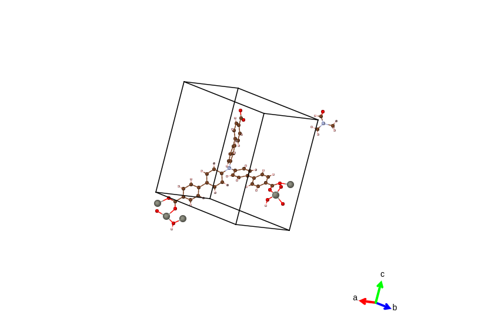
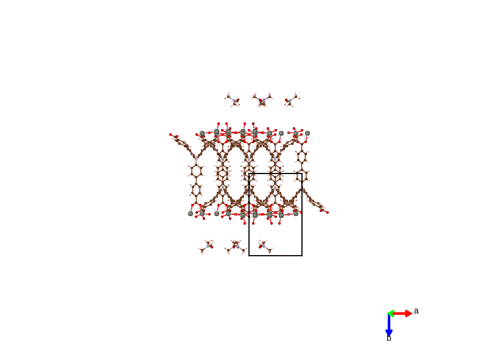
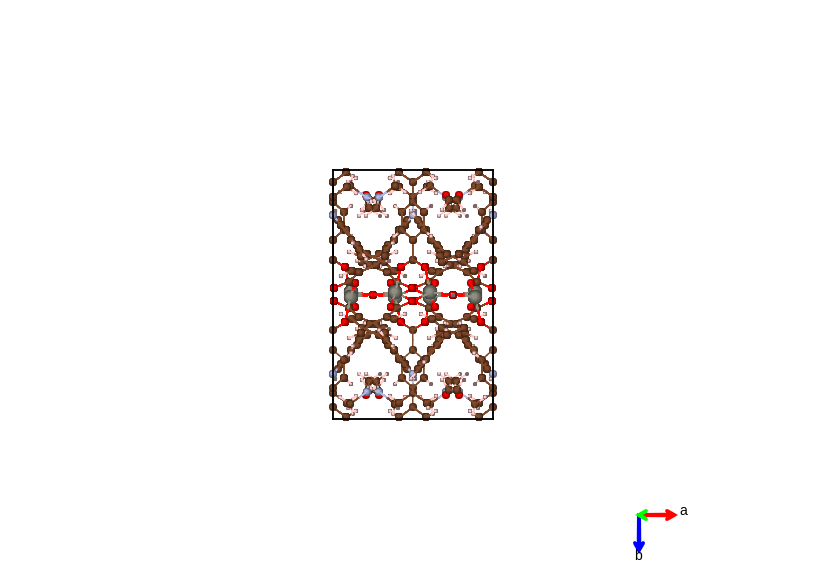

3DStructGen Help Document
3DStructGen Overview
3DStructGen is an interactive web-based application for viewing and editing non-periodic molecules and crystals. It can also perform various calculations on molecules or crystal structures, which can be utilized in many fields. And you don't need any installation, additional plugins or Java, which is of great convenience.
You can create molecules of any structures by choosing elements and adding one atom at a time, or load existing files in different formats alternatively. You are free to edit and modify any loaded structures and use optimize button to optimize structures of your own creation.
We pay special attention to crystal structures. For crystal structures (in .CIF format), we can view molecules in different modes and make useful calculations on them.
Screenshots
MOF material
MgO supercell with line display style
C26HN5O molecule (non-periodic)
Browser Requirement
Your browser does NOT appear to support the required HTML5 Canvas element.
The interactive drawing window used on this website requires HTML5, which is NOT supported by version 8 or lower of Microsoft Internet Explorer. To use this site, you will need to use a browser that supports the Canvas element and a few other features of HTML5. The followings are several freely available web browsers that should work with this interface.
- Mozilla Firefox - Available for Microsoft Windows, Apple, Linux, and Android.
- Google Chrome - Available for Microsoft Windows, Apple, Linux, Android, and iOS.
- Opera - While not as popular, is available for Microsoft Windows, Apple, Linux, Android, and iOS.
- Apple Safari - Should already be installed on current Mac computers.
Currently, touch screen devices are NOT fully supported by this interface. While the web page will load, several important tasks do not function properly on tablets or other touch screen devices.
User Interface
In default, you are in View Mode. You can swicth to Drawing Mode at any time you want by click the switch button at top left.
Initially, the methane molecule is displayed on the canvas when the page is loaded.

Top bar
Switch button between two modes.
Load or export files, and you can save a screen shot of the plot as well.
> For crystal structures, you can build crystals systematically.
Enter the parameters of the crystal, and add one or more atom as you want.
> When the cleaving surface operation is finished, you can build a slab of vacuum by entering the thickness you want.
> For crystal structures, you can cleave the structure to get a specific surface as you want.
- Cleave plane(h k l): Direction of the cleave plane.
- Thickness: Thickness of the surface slab.
- Surface vectors:Two basis vectors that span a given surface orientation are recommended by 3DStructGen. Users can also modify those values
> For crystal structures, you can create supercells by entering numbers of periods along each axes.
> For crystal structures, you can call symmetry informations (irreducible k-points, space group). They are shown in system window.
> Optimize the structures using mechanics.
> Optimize the structure using ChemKit API with UFF forcefield method in Open Babel.
> Initialize canvas to methane molecule.
> Clear the canvas completely.
> Clear system window.
> Clear property window.
> For crystal structures, you can generate KPOINT, POSCAR and INCAR files for VASP.
> For non-periodic molecules, you can initiate Gaussian calculation and export the result.
> For MOF structures, you can highlight framework, solvent or guest molecule if you want.
> For MOF structures, you can hide framework, solvent or guest molecule if you want.
Get the documentation of 3DStructGen
Left Buttons
There are two sets of left buttons. Left ones are for various viewing operation. Right ones are for editing operations.
Show the coordinates of atoms in system window.
Attach labels on each atoms of the display.
Change mouse operation into translate mode. It means that if you click and drag the srceen, molecule will translate with the mouse.
Change mouse operation into rotate mode. It means that if you click and drag the srceen, molecule will rotate with the mouse.
Hide or show all the H atoms.
Hide or show all bonds.
Hide or show "OABC" labels along axes of crystal cube. Only for crystal structures.
How to display atoms and bonds on canvas. There are three styles for chosen:
- Ball and stick Default style. Display atom as a ball whose radius is proportional to the element radius, and bonds as a cylinder of two atom colors.
- Stick Do not display atoms. Display bonds as cylinders with two atom colors.
- Line Do not display atoms. Display bonds as lines with two atom colors.
You can make the molecule rotate without mouse draging.
> // Make the molecule rotate around axes automatically.
> One single rotation along axes. You can set the angle of the rotation.
View the molecule along "a", "b", or "c" axis.
Zoom in or zoom out, or back to normal size.
For crystal structures, you can display the molecule in four different styles.
- Asymmetric The minimal subunit of a crystal is presented, consisting of one or more atoms, ions, or molecules, of which geometric arrangement is not related by crystallographic symmetry..

- Origin Using this style, each atom will be displayed in its original location, together with copies formed by applying each of the operators of the symmetry group.

- In-cell The atoms are displayed based on whether their coordinates, as well as their symmetric copies are in the lattice cell.

- Packing The complete molecules and their symmetric copies in a lattice cell will be displayed depending on the geometric center of connected sets of atoms. This gives a display of conventional cell for most types of crystal system.
For crystal structures, hide or show the cube.
Recenter the molecule. Make it at the middle of the screen.
Set the background color of the display.
In draw mode, you can select the element of new atom by calling the periodic table below and select the element you want.
/// The sp type of new atom, indicating how many H atoms will be attached to the new atom automatically.
Change mouse operation into atom delete mode. In this mode, if you click on an atom, the atom will be deleted. Bonds and H atoms attached to the deleted atom will alse be deleted.
Change mouse operation into bond delete mode. In this mode, if you press on an atom, and then drag onto another atom and release, the bond between the two atoms will be deleted.
// Determine the type of bond being added next.
Click this button, and then you can select one bond (See ......). Once you have selected a bond, molecule will rotate till the bond is perpendicular to the screen. Then you can drag mouse to rotate part of the molecule around this bond.
You can translate atom by step, and set the step value if you want.
You can optimize the structure by pressing this button as well.
/ In draw mode, you can undo your last operation or redo your operation.
Right bank
There are three banks at the right side.
- Formula bank: Display chemical formula of the molecule.
- System window: Display global informations of molecule, calculation results, and other informations of the system.
- Property window: Display informations of a single atom, atoms distances, bond angles, and other property of molecules.
Mouse Operation
Most of the operations can be performed by pure mouse actions. Some operations require a combination of both keyboard and mouse. Mouse indicates left button of mouse.
In view mode
- Mouse Drag: Drag in the blank space will cause molecules rotate around some axis in space. Note if you press mouse on any atom and then drag, molecules will not be rotated.
- Mouse Wheel: Wheel will cause the whole scene to zoom in or out.
- <Shift>+Mouse Drag: Molecules will rotate around z axis only.
- Mouse Click: If you click on an atoms in view mode(press and release at the same position on an atom), this atom will be selected and its informations (coordinates, element, atom index) will be printed in property window.
- <Shift>+Mouse Click: The atom will be highlighted. If it has been highlighted, it will no longer be.
In draw mode
- Mouse Drag: In draw mode, it still works as in view mode.
- Mouse Wheel: In draw mode, it still works as in view mode.
- Mouse Click:
- If you click at blank position, a new atom will be created at this position (z-coordinate = 0). By default, element of new atom is carbon, and no additional H atom will be added. You can choose other element as well(See next section).
- If you click on an atom and new added atom is not H atom, the clicked atom will be replaced by new atom, and H atoms will be attached to new atom according to the sp type as well.
- If you click on an atom and new added atom is H atom, the clicked atom will be attached one more H atom.
- Press on atom and Drag: In draw mode, you can also add new atoms by pressing mouse on an atom, dragging mouse to blank space, and releasing mouse.
Drawing Operation
All of these operations can only be done in Draw Mode
Add new atom
First you should make sure is not presses. Then you should choose the element of the new atom by (default C element). Then you should choose the sp type of the new atom(default sp3). It determines how many bonds the atom can attach.
Now, you can add the new atom by:
- Click at blank space. New atom will be added at the clicking postion.
- Click at existing atom. The atom will be replaced by new atom, or one more H atom is attached to it(if new atom is H element).
- Press on existing atom and drag into blank space. New atom will be created and it is connected to the existing atom.
Apart from the first way, new atom will be supplimented with H atoms according to its sp type.
Delete atom
First you should click . Then all you need is just to click on the atom you want to delete. Bonds and H atoms connected with it will be deleted as well.
Add new bond
First you must make sure that is not pressed. You should press mouse on one atom, and drag to another then release mouse. And then the bond between them will be created.
Change bond type
Just choose the bond type you want, and add it ignoring the existing bond. Old bond will be covered by the new one.
Delete bond
Click . Then press mouse on one atom, then drag to another one and release mouse. Then the bond between the two atoms will be deleted.
File Format
Currently, this program supports files in formats below:
- .XYZ
- .SDF
- .CIF
- .MOL
- .INP